作者: 陈军 AI 咨询专家
在人工智能与知识工程飞速发展的今天，本体（Ontology）作为知识表示的核心，正经历着从静态知识图谱向动态时空推演的范式演进。本文将深入剖析两个极具代表性的本体应用架构：基于W3C标准的OWL本体引擎（OAG Knowledge Graph）与基于OMG系统工程标准的KerML推演引擎（KerML Ontology Simulator）。
通过对核心代码的解构，我们将探讨这两种架构的设计哲学、流程原理及各自的优缺点，为企业级知识图谱构建与多智能体仿真提供架构选型参考。
一、架构概览：静态知识 vs 动态推演
在深入代码之前，我们首先通过技术栈对比图来直观感受这两种架构的差异。
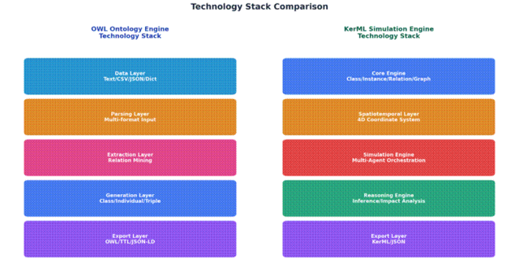
OWL本体引擎侧重于数据的解析、关系抽取与标准化导出，是一个典型的数据驱动型静态知识构建系统。而KerML推演引擎则引入了4D时空坐标系与多智能体协同，是一个场景驱动型动态仿真系统。
二、 OWL本体引擎：构建标准化的知识图谱
OWL（Web Ontology Language）是W3C推荐的语义网标准，主要用于处理信息的语义结构。该引擎的核心目标是将非结构化或半结构化数据转化为标准的三元组知识图谱。
1. 核心架构与流程原理
OWL引擎的架构设计遵循经典的ETL（提取、转换、加载）模式，但在此基础上增加了语义化处理层。
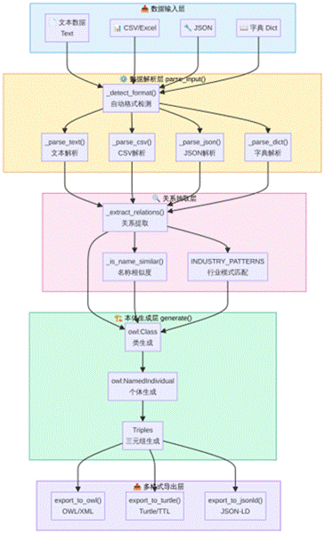
其核心流程可以分为四个阶段：
1多格式数据解析：支持自动检测并解析文本、CSV、JSON和字典等多种数据源。
2关系抽取与模式匹配：内置了制造业、零售、医疗等行业的特定模式（INDUSTRY_PATTERNS），并结合名称相似度算法提取实体间的隐式关系。
3本体生成：将解析后的数据映射为OWL标准的类（owl:Class）、个体（owl:NamedIndividual）和三元组（Triples）。
4多格式导出：支持导出为OWL/XML、Turtle（TTL）和JSON-LD三种主流语义网格式。
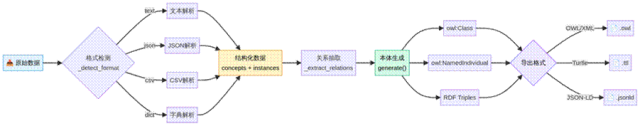
2. 核心代码解构
在ontology_engine.py中，核心类OntologyEngine承担了所有的解析与生成工作。
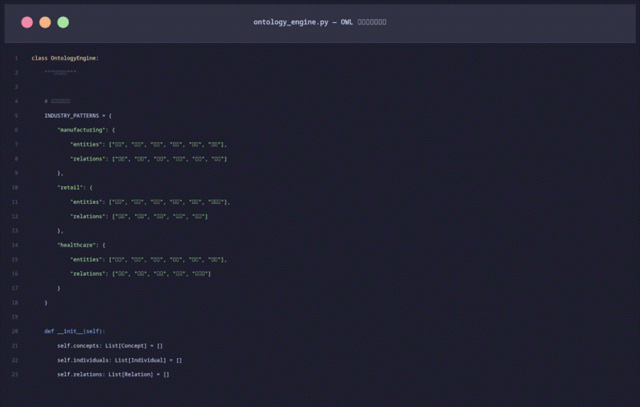
代码中定义了严格的数据模型，包括Concept（概念类）、Individual（实例）和Relation（关系）。这种设计使得引擎能够很好地映射到RDF三元组（主-谓-宾）结构。
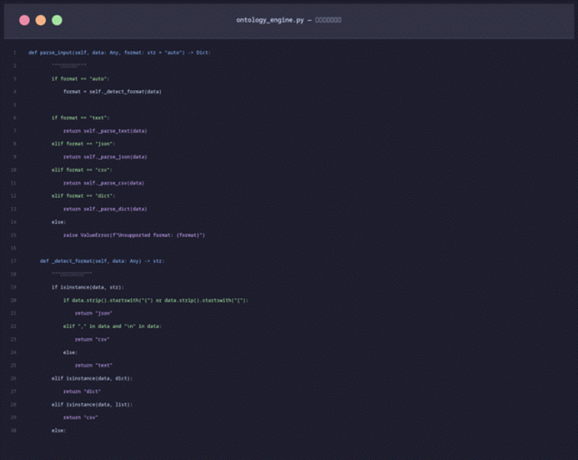
在数据解析层，引擎通过_detect_format方法实现了高度的灵活性，能够自适应不同的输入数据结构，极大降低了数据接入的门槛。
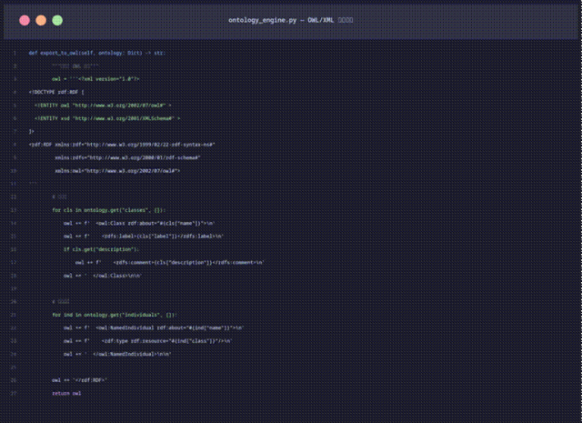
导出层严格遵循了W3C的XML规范，通过字符串拼接的方式生成标准的OWL文件，确保了与其他语义网工具（如Protégé）的无缝兼容。
三、 KerML推演引擎：4D时空与多智能体协同
KerML（Kernel Modeling Language）是OMG组织为SysML v2制定的底层语义基础。与OWL不同，KerML天生具备系统工程的基因，支持对物理世界进行精确的时空建模。
1. 核心架构与流程原理
KerML引擎的架构远比OWL引擎复杂，它不仅包含静态的类与实例管理，还引入了时间维度和智能体行为模型。
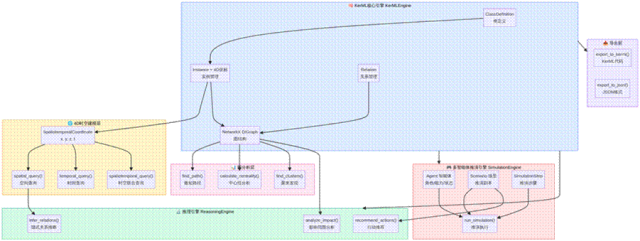
其核心模块包括：
54D时空建模层：所有实例都绑定了SpatiotemporalCoordinate（x, y, z, t），支持复杂的时空联合查询。
6多智能体推演引擎：基于场景（Scenario）驱动，智能体在推演中经历感知、推理、决策、执行等6个生命周期阶段。
7推理引擎：不仅支持基于图结构的BFS影响范围分析，还能基于空间接近度推断隐式关系。
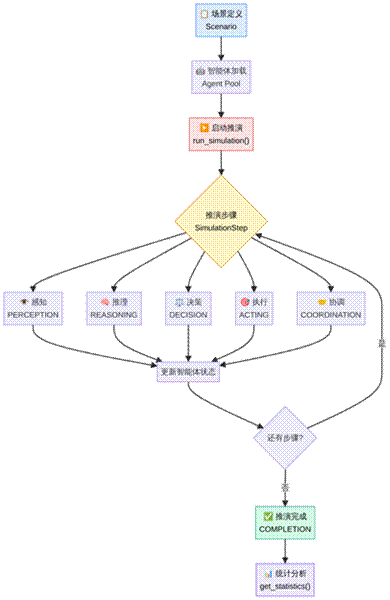
2. 核心代码解构
在kerml_engine.py中，最引人注目的设计是4D时空坐标系的引入。
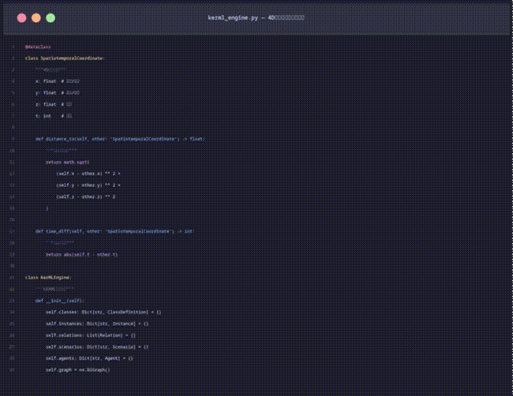
通过SpatiotemporalCoordinate数据类，引擎能够计算实例之间的空间距离和时间差，这为后续的物理世界仿真奠定了基础。
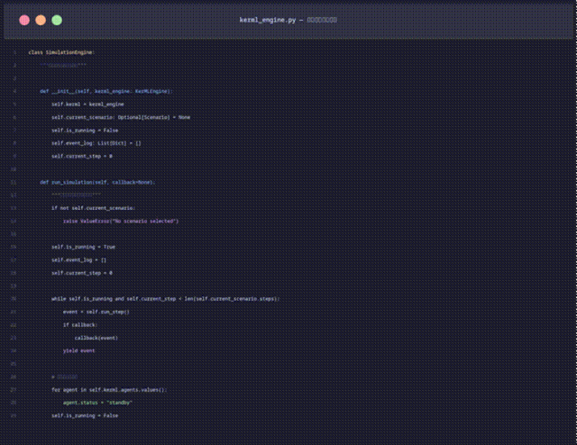
SimulationEngine类实现了一个基于生成器（Generator）的步进式推演框架。通过run_simulation方法，系统可以逐步执行场景剧本，并实时更新智能体的状态。
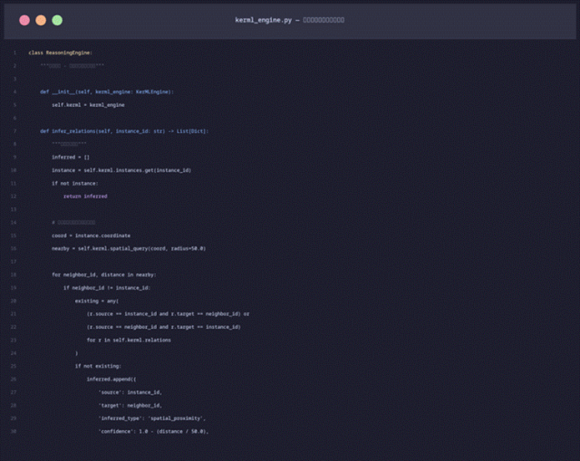
推理引擎ReasoningEngine展现了KerML在物理空间分析上的优势。例如，infer_relations方法能够自动查找空间半径内的其他实例，并根据距离计算置信度，从而推断出潜在的物理邻近关系。
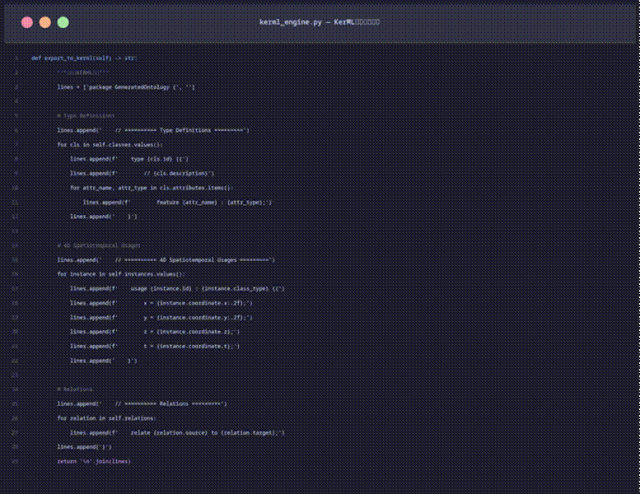
在导出方面，引擎生成了符合SysML v2规范的KerML文本代码，使用type定义类，使用usage定义包含4D坐标的实例。
四、架构对比与优缺点分析
为了更清晰地展示这两种架构的差异，我们从技术标准、核心范式、数据模型等多个维度进行了全面对比。
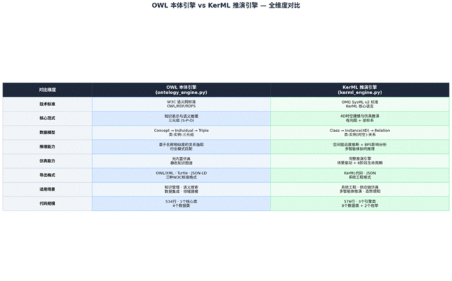
1. OWL本体引擎的优缺点
优点：
•标准化程度高：严格遵循W3C语义网标准，生态系统完善，易于与现有知识图谱工具集成。
•逻辑推理能力强：基于描述逻辑（Description Logic），支持严格的分类推理和一致性检查。
•数据接入灵活：支持多种非结构化和半结构化数据的自动解析。
缺点：
•缺乏时空表达能力：原生OWL难以优雅地表达随时间变化的状态或精确的三维空间位置。
•静态属性：本质上是静态的知识库，缺乏对动态行为和过程的建模能力。
2. KerML推演引擎的优缺点
优点：
•原生4D时空支持：能够精确描述物理实体在三维空间和时间轴上的状态变化。
•动态仿真能力：内置多智能体推演引擎，支持复杂场景的模拟与态势感知。
•系统工程对齐：与SysML v2标准对齐，非常适合制造业、供应链、航空航天等领域的数字孪生构建。
缺点：
•生态相对封闭：作为较新的标准，其工具链和生态系统不如OWL成熟。
•计算复杂度高：时空查询和多智能体状态更新需要消耗更多的计算资源。
五、总结与选型建议
OWL与KerML代表了本体工程的两个重要发展方向：语义互操作性与物理世界仿真。
•如果您的业务场景侧重于知识管理、文档检索、智能问答或跨系统的数据集成，基于OWL的架构是最佳选择。它能帮助您快速构建起标准化的企业级知识图谱。
•如果您的业务场景涉及数字孪生、供应链仿真、智能制造或多智能体协同决策，基于KerML的架构将展现出无可比拟的优势。它的4D时空建模能力将使您的系统真正"活"起来。
在未来的复杂企业应用中，我们甚至可以预见这两种架构的融合：使用OWL构建顶层领域知识库，使用KerML处理底层的动态物理仿真，从而实现从认知到行动的完整闭环。
所有代码和文件都在知识星球，欢迎加入AGI2B 知识星球， 一起进化， 一起共创：